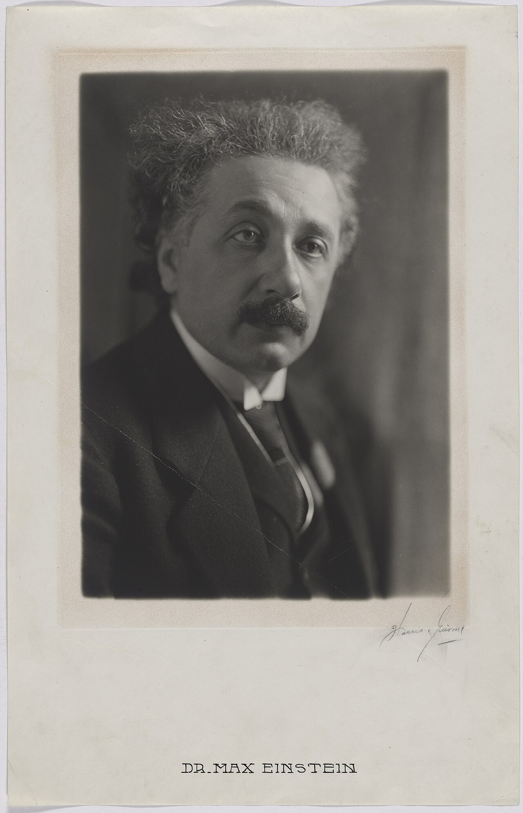
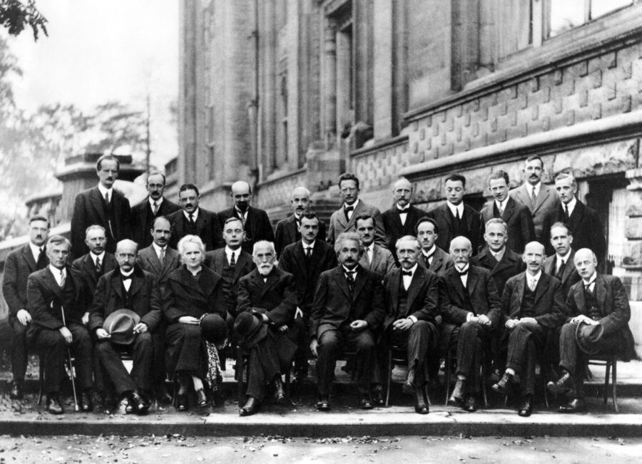

{kind=link}
Einstein explained the photoelectric effect by proposing that light transfers energy in discrete quanta, later called photons. This became a foundation of quantum physics.
Physics · Relativity · Quantum Theory · History of Science
Albert Einstein: Reimagining Space, Time & Light
Albert Einstein changed physics by asking deceptively simple questions: What would it be like to ride beside a beam of light? How would gravity feel inside a falling elevator? His answers connected matter and energy, joined space with time, and helped launch quantum physics.

Your investigation notebook
Time
35–50 minutes · Grades 8–12
No prior relativity required
You will be able to
- Use a light clock to explain why moving clocks run slow in another inertial frame.
- Distinguish photon energy from light intensity in the photoelectric effect.
- Connect evidence to Einstein’s four 1905 breakthroughs.
Keep these ideas nearby
Reference frame · a system for measuring events
Photon · one packet of light energy
Proper time · time measured by a clock beside the events
From Curious Student to World-Famous Physicist
Albert Einstein (March 14, 1879–April 18, 1955) was born in Ulm in the German Empire and grew up in Munich. Fascinated by a compass as a child, he became convinced that invisible laws must govern nature. He later studied physics and mathematics at the Swiss Federal Polytechnic in Zürich.
Unable to find a university post after graduating, Einstein worked at the Swiss Patent Office in Bern. That ordinary-looking job gave him time to think deeply about clocks, signals, motion, atoms, and light. In 1905—his “miracle year”—he published four papers that transformed modern physics.
Relatable idea: Einstein did not begin his greatest work in a famous laboratory. He developed it while working a day job, talking with friends, playing violin, and using thought experiments. Scientific creativity often begins with a clear question, not expensive equipment.
A Life of Ideas
- 1879Born in Ulm, Germany.
- 1902Begins work as a technical expert at the Swiss Patent Office in Bern.
- 1905Publishes landmark papers on light quanta, Brownian motion, special relativity, and mass–energy equivalence.
- 1915Completes the field equations of general relativity, describing gravity as curved spacetime.
- 1919Measurements during a solar eclipse support his prediction that gravity bends light; Einstein becomes internationally famous.
- 1922Receives the 1921 Nobel Prize in Physics, especially for explaining the photoelectric effect.
- 1933Leaves Nazi Germany and settles in the United States, joining the Institute for Advanced Study in Princeton.
- 1955Dies in Princeton, New Jersey, leaving unfinished work toward a unified theory of physics.
1905: Four Papers, Four Revolutions
His mathematical explanation of Brownian motion showed how invisible molecules jostle visible particles, providing powerful evidence for atoms.
Special relativity showed that observers can disagree about time and distance while still measuring the same speed of light.
The equation E = mc² revealed that a small amount of mass corresponds to an enormous amount of energy.
Special Relativity: When Clocks Disagree
Einstein began with two rules: the laws of physics work the same in every non-accelerating frame, and every observer measures light in a vacuum moving at the same speed, c. To keep both rules true, measurements of space and time must depend on the observer’s motion.
γ = 1 / √(1 − v²/c²)
The Lorentz factor γ tells us how strongly time dilation and length contraction appear at speed v.
One ship-clock tick, observed from Earth
READY · 0.80 c
The left light clock stays beside Earth and ticks once per Earth year in this model. The right clock moves horizontally. Its photon still travels at light speed, so its longer diagonal path takes gamma Earth years while one ship year passes.
Ship speed0.80 c
Lorentz factor1.667
Earth elapsed0.00 y
Ship elapsed0.00 y
Model note: One complete up-and-down photon trip equals one model year. Horizontal distances are compressed at extreme speeds so the whole ship path remains visible; the calculated times and the ratio Δt = γΔτ are not compressed.
Observe: The traveler measures their own clock normally: one ship year per tick. In Earth’s frame, the same ship tick takes γ Earth years. This relationship is reciprocal for inertial observers; comparing reunited clocks requires accounting for the traveler’s change of frame.
Causal contact is possible at or below light speed.
Only light—or another massless signal—can follow this path.
The events are spacelike separated; neither can cause the other.
General Relativity: Gravity Is Geometry
Einstein's “happiest thought” was that a person falling freely does not feel their own weight. From this equivalence between gravity and acceleration, he developed a new picture: mass and energy curve spacetime, and objects follow the straightest possible paths through that curved geometry.
Starlight passing the Sun follows curved spacetime, an effect famously tested during the 1919 eclipse.
The equations allow regions where spacetime curves so strongly that not even light can escape.
Accelerating masses can send ripples through spacetime; these waves were directly detected a century later.
Satellite clocks experience motion and gravity differently from clocks on Earth, so navigation systems apply relativistic corrections.
What E = mc² Really Means
E = mc²Energy equals mass multiplied by the speed of light squared.
Mass is a concentrated form of energy. Because c² is enormous, even a tiny change in mass can release a tremendous amount of energy. The equation helps explain why the Sun shines: nuclear fusion produces products with slightly less mass than the starting nuclei, and the difference appears as energy.
The equation does not mean that every object automatically releases all of its mass as usable energy. A physical process must convert part of the system's mass into another form of energy while conserving total energy and momentum.
Rest energy8.99 × 10¹⁰ J
Equivalent electricity24,966 kWh
Important: this calculator shows complete rest-mass conversion. Fusion and fission convert only a fraction of a system’s mass difference into other forms of energy.
The Photoelectric Effect: Brightness Is Not Enough
Classical wave physics suggested that brighter light should eventually knock electrons from any metal. Experiments showed a sharp threshold instead. Einstein explained it by treating light as packets: each photon carries energy E = hf = hc/λ.
Photon–metal chamberNO EMISSION
Light travels toward a metal plate. When photon energy is greater than the selected metal’s work function, electrons move from the plate toward a collector. Increasing intensity sends more photons but does not change each photon’s energy.
Photon energy2.76 eV
Work function4.30 eV
Maximum electron KE0.00 eV
Below threshold
Explain: Frequency—or equivalently wavelength—sets the energy of each photon. Above threshold, greater intensity sends more successful photons and therefore more electrons. Below threshold, sending more low-energy photons still cannot free an electron in this one-photon model.
Einstein’s Broader Impact
His Nobel-recognized explanation of the photoelectric effect underlies solar cells, digital cameras, and light sensors.
Einstein recognized and extended Satyendra Nath Bose’s new counting method, helping predict a state of matter now called a Bose–Einstein condensate.
Brownian motion connected microscopic molecular collisions to measurements people could observe.
Einstein spoke publicly about war, nuclear weapons, civil rights, refugees, and international cooperation—sometimes changing his views as events changed.

{kind=link}
Continue the Idea Across STEAM
Each lesson below connects directly to a question Einstein worked on. Follow the links to turn his biography into a learning path.
Check the Evidence, Not Just the Vocabulary
0 of 5 checked
1. Which work was singled out in Einstein’s Nobel Prize citation?
2. In Earth’s frame, why does the moving light clock take longer to tick?
3. In general relativity, what do freely falling objects follow?
4. A metal does not emit electrons under red light. What will increasing only the red light’s intensity do?
5. A ship travels at 0.80 c. Approximately how many Earth-frame years pass during one ship year?